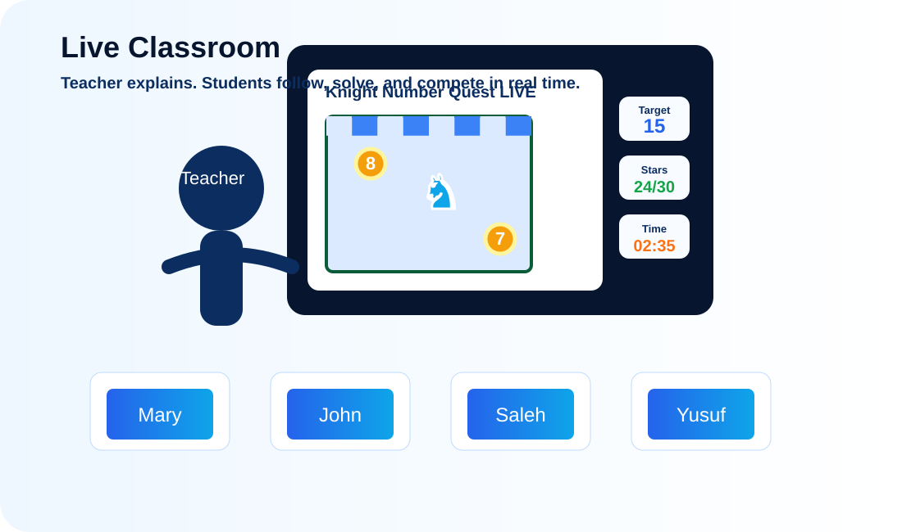
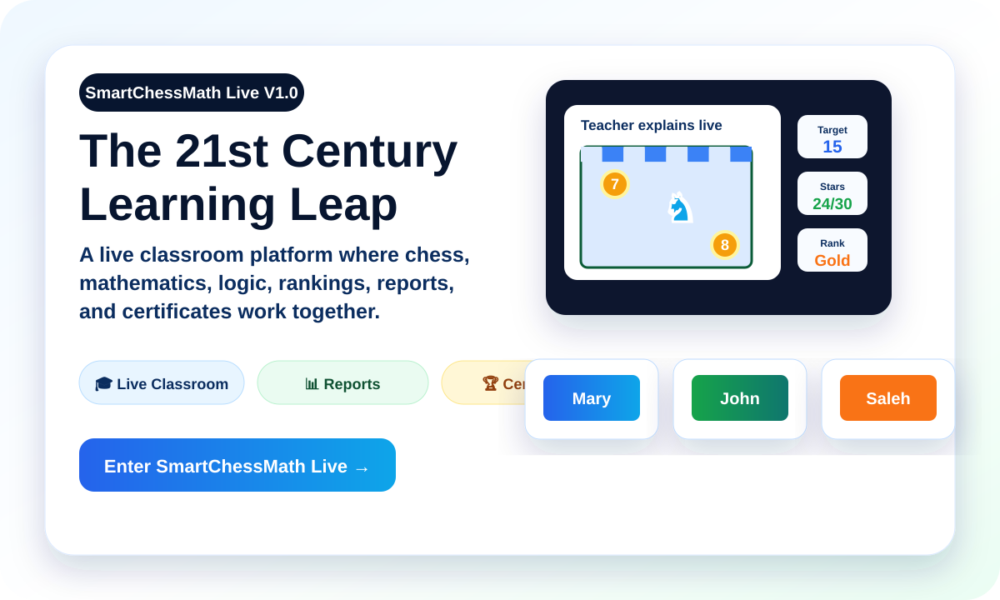

♞ Knight Number Quest
7
♞
5
Plan knight moves, collect exact target numbers, and build flexible thinking through challenge routes.
Smart Chess Math turns mathematics into movement, logic, challenge, and discovery.
Modern interactive programs for schools that want stronger thinking skills, faster problem solving, deeper focus, and joyful classroom participation.
Designed for 21st century learners, classroom pilots, school championships, and live educational challenges.


A modern live educational platform for schools. Teachers can create classrooms, explain activities, run official challenges, monitor student progress, and print reports and certificates — while students learn mathematics through chess, logic, focus, and smart competition.
Each activity combines legal chess movement, number targets, smart routes, time challenges, and clear feedback to help students learn by doing.
Plan knight moves, collect exact target numbers, and build flexible thinking through challenge routes.
Use the queen’s lines to connect speed, strategy, and mathematical route planning.
Think in rows and columns, reach exact targets, and strengthen structured calculation.
Explore diagonals, recognize patterns, and solve exact-number challenges through visual logic.
Smart Chess Math supports teachers with ready-to-use classroom activities, school competitions, and a powerful learning experience that develops thinking skills.
Teachers can explain, observe, challenge, compare, and celebrate student progress with clear classroom tools.
SmartChessMath Live V1.0 gives schools a live classroom environment with teacher control, student participation, rankings, reports, and certificates.
Use Smart Chess Math for school enrichment, math clubs, educational chess events, and official classroom challenges.
Contact Smart Chess MathEducational concept, design, and development by Eng. Salman Ahmed Salman.